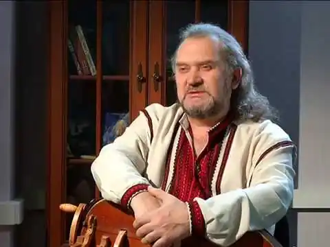
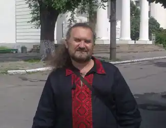

Олександр Іванович Власюк, відоміший під ім'ям Сашко Лірник — казкар-лірник, інженер-будівельник та кораблебудівельник, колишній учасник київського гурту "Вій", сценарист, актор, телеведучий, автор телепрограм. Був членом журі фестивалю авторської пісні "Срібна підкова", постійний учасник фестивалів "Країна Мрій", "Шешори", "День Незалежності з Махном", "Етноеволюція", "Трипільське Коло". Володар почесного звання "Заслужений працівник культури України". Володіє такими музичними інструментами, як колісна ліра, варган, бубон, гітара. Має учнів в Україні, Росії і США.
Життєпис
Народився Сашко Лірник 24 січня 1963 року в місті Умань, де мешкав у старому будинку родини графа Потоцького. В інтерв'ю радіостанції "Голос Свободи" підтвердив, що приблизно у 1985—1997 проживав у Росії, в Мурманську, де створив українське земляцтво. Зрештою повернувся в Україну. Нині мешкає у Києві. В 1999—2002 роках — автор і ведучий телепередачі "Казки лірника Сашка". У 2003 році диск "Казки лірника Сашка для дорослих і дітей" був визнаний найкращим альбомом України (опитування журналу "Політика і культура"). З 2010 року — автор і ведучий програми для дітей "Світанок" на каналі ICTV. У грудні 2011 року програма для дітей "Світанок" на каналі ICTV була закрита. Сашко Лірник написав і поставив чотири "Зіркові вертепи" 2008, 2009, 2010, 2011 років на фестивалях "Карпатія". Записував пісні з гуртами "Рутенія", "Чур", "Вій", "Кому Вниз", знявся у кліпі гурту "Тінь Сонця". Зараз знімає художній фільм за мотивами своєї казки "Про вдову Ганну Шулячку, Чорного козака і страшне закляття", в якому грає одну із ролей. Ведучий фестивалю "Українське Різдво" в Оперному театрі м. Києва. Брав участь у багатьох етно та музичних фестивалях як казкар-лірник. Сашко Лірник написав і поставив "Зірковий Новорічний Вертеп" на Майдані Незалежності в Києві у 2014 році[6], який визнано найкращим новорічним шоу в Україні 2014 року. У 2014 році на екрани вийшов мультсеріал "Моя країна Україна" за сценарієм Сашка Лірника — 26 серій, який він і озвучував і є головним героєм разом із своїм котом Воркотом. 2011 року у видавництві Олега Петренка-Заневського "Сіма видає" вперше вийшла книжка "Казки Лірника Сашка". У 2013 році це видання на Інтернаціональній виставці ілюстраторів дитячої книжки "Mostra degli Illustratori" (Болонський дитячий книжковий ярмарок) було обране до 50 найкращих художніх творів з понад 3200 заявлених зі всього світу[7]. У 2014 році вийшла книжка "Казки Лірника Сашка" (видавництво "Зелений Пес"), яка стала лідером в рейтингу українських книжок. Постійний організатор, сценарист-постановник і учасник дитячих свят на Миколая у Києві, Відні, Варшаві, Монреалі, Торонто і Празі. У2015 році очолив рейтинг найпопулярніших блогерів України на SITE.UA Єдиний артист у світі,якому дзвонять бійці з фронту з проханням розказати по телефону казки "для бліндажа". Постійно їздить на передній край фронту з концертами, організовує волонтерську допомогу. Організатор "Агітпотягу на Схід" . Улюблений артист українських воїнів. Організовував і проводив концерти для бійців в Мар"їнці, Красногорівці,Пісках, Маріуполі,Широкіному, на шахті "Бутовка",Авдіївці,Волновасі, і т.д. У 2016 році за волонтерську роботу і виступи на фронті отримав нагороду Генерального Штабу ЗСУ "За заслуги перед Збройними Силами України" Автор ідеї, організатор і режисер — постановник концерту для ветеранів АТО до 25— ліття Збройних Сил України в Києві. В концерті вперше в Україні найвідоміші українські рок-гурти ( "Брати Гадюкіни", "Тінь Сонця", "Вій", "От Вінта", "Багіров Бенд" ) виступили разом із Оркестром ЗСУ і зіграли спільно свої композиції. Твори Записав 5 альбомів(CD) Лірник Сашко — "Казки лірника Сашка" (аудіокнига MP3), присвятив своєму батькові — Власюку Івану Семеновичу[8]; Лірник Сашко — "Дорослим і дітям" (аудіокнига MP3); Лірник Сашко — "Химерні оповіді" (аудіокнига MP3); Лірник Сашко — "Казки для старшеньких" (аудіокнига МР3); Лірник Сашко — "Музика і пісні з казок Лірника Сашка" (аудіокнига МР3); Опубліковано дві книги казок Олександр Власюк. Казки лірника Сашка. — ВД АДЕФ-Україна на замовлення видавництва Олега Петренка-Заневського "Сіма видає", 2011. — 32 с. — ISBN 978-966-2036-03-9. Сашко Лірник. Казки Лірника Сашка. — К.: Гамазин, 2014. — 72 с. — ISBN 978-966-279-010-8. Написав сценарій повнометражного мультфільму "Про чотири роги і козацький рід"[1]. Для Українського радіо записав "Ніч перед Різдвом". Автор сценарію музичного кліпу О.Скрипки "Щедрик" та сценарію спектаклю "Чорний Козак" для українського театру в Торонто. Премії, відзнаки та нагороди 2000 — дитячим журі обраний "найкращим дитячим письменником України". 2009 — Указом Президента України присвоєно почесне звання "Заслужений працівник культури України".[9]. 2010 — приз глядацьких симпатій та лауреат кінофестивалю "Відкрита Ніч" за найкращий сценарій (мультсеріал "Моя країна-Україна", який сам і озвучував). 2011 — перший лауреат номінації "Золоте перо", за рішенням дитячого читацького журі. 2014 — нагороджено ювілейною відзнакою "200 років з Дня народження Т. Г. Шевченка" за вклад в розвиток української культури. 2016 — нагорода Генерального Штабу ЗСУ "За заслуги перед Збройними Силами України"